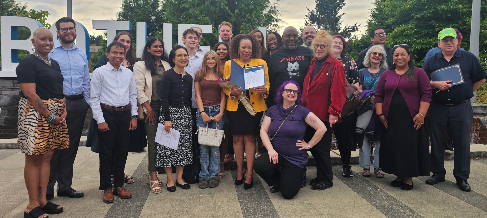

React to a haul.
Duet or stitch a creator’s video. Ask about the find, notice a detail, then give your verdict.
People know your voice from “Thrift Shop.”
Let’s start there—and introduce them to more of your music.
People show you their secondhand finds. You react, ask a question, and give a verdict—with your familiar vocal reserved for the best ones.
The joke works because the audience knows the voice. The reason to keep watching is your opinion: what you notice, what you’d wear, and what you’d leave behind.
Start with thrift and vintage creators over 50. Let it be a conversation between people who know what they like.
The shrug.
“I’d leave that one.”
The good find.
“That’s a come-up.”
The full-voice verdict.
The familiar line, saved for something you really like. Record a clean take too.
Try the top verdict in roughly one out of five reviews. Keep the reaction honest.
Duet or stitch a creator’s video. Ask about the find, notice a detail, then give your verdict.
A monthly visit with one assignment: find something worth bringing home. A store appearance could become a paid version of the series.
Invite people to submit finds for review. A reusable recorded verdict lets them join in with their own videos.
Wanz Approved uses that recognition to introduce your humor and taste. A music clip or live session then gives people something else to hear.
The thrift series can stand on its own. It can also point people toward your songs, shows, and stories without turning every post into an advertisement.
Someone shows you what they bought. You notice the detail and give the verdict.
Keep the top verdict rare. Invite viewers to submit their own finds.
Put a performance clip, your current song, or the next live session within easy reach.
A community moment becomes a short-form invitation. Large type, musical pacing, and a question that opens the next story.
“Name a Seattle-area artist more people should hear.”
A photo-based sample with original instrumental sound design.A short post for your current song.
Hear the full song →Your official “LoveWillBeWaiting” video gives the campaign a song for listeners to explore.
Draft caption: If you know the voice, here’s another part of the story. “Love Will Be Waiting.” Hear the full song.
Plays a 22-second excerpt from the official video. Internet required. If the player does not load, use “Open the official video.”Wanz Approved starts with thrift finds. The other series use music-making, Seattle interviews, and remixes. Here’s what viewers would see in each.
These are four ways to turn the work into performances people can attend or book: a livestream, a booking package, a talk with songs, and a shared show.

Who should we hear next?Cyan and slate connect the series, with clear titles and a distinct layout for each.
One recording can supply several posts. Transcription and editing tools prepare the clips and captions; you review the cuts.
Start with one recording and a few finished clips. Keep the process simple enough to use every week.
Later: scheduling approved pieces, weekly numbers, and booking-email drafts. Review each piece before scheduling it.
You decide what feels like you. Collaborator relationships, fees, and decisions about song excerpts stay with you.
A behind-the-scenes episode could show how you choose the moments worth sharing.
A Converge Media interview could introduce the music you’re making now and the people you work with in Seattle.
We could prepare a feature idea for Converge, or start by recording a conversation ourselves.
A concise offer backed by music people can hear. Build the booking package and one strong session excerpt.
Signs of interest: relevant inquiries, complete brief requests, and a format you enjoy delivering.Three pilot episodes test the humor and the verdict. Each makes it easy to discover the artist behind the personality.
Signs of interest: attentive viewers, thoughtful responses, profile visits, and track interest.One conversation could open into a shared night of music. The relationship leads; the format makes it visible.
Signs of interest: meaningful guest suggestions, partner interest, and repeat audience connection.Photography and art direction, short-form concepts, scripts, campaign materials, and a coherent presentation of the work.
We would decide the scope together.Week 1: select one lead concept and review source media together. Week 2: build a first piece and refine the voice and look. Week 3: create two related variations or a supporting booking asset. Week 4: review what feels true and, if anything was shared, what useful response it earned. Scope, fees, and any release decision would be a separate conversation.
The official artist channel’s current music video. A song people can listen to now.
Watch the original ↗An existing sizzle reel linked on your press page. Useful reference for the booking package.
Watch the sizzle ↗A live vocal performance listed on your official YouTube channel. A different view of the voice.
Open the performance ↗Which idea would you enjoy making?
We can start with one sample episode.